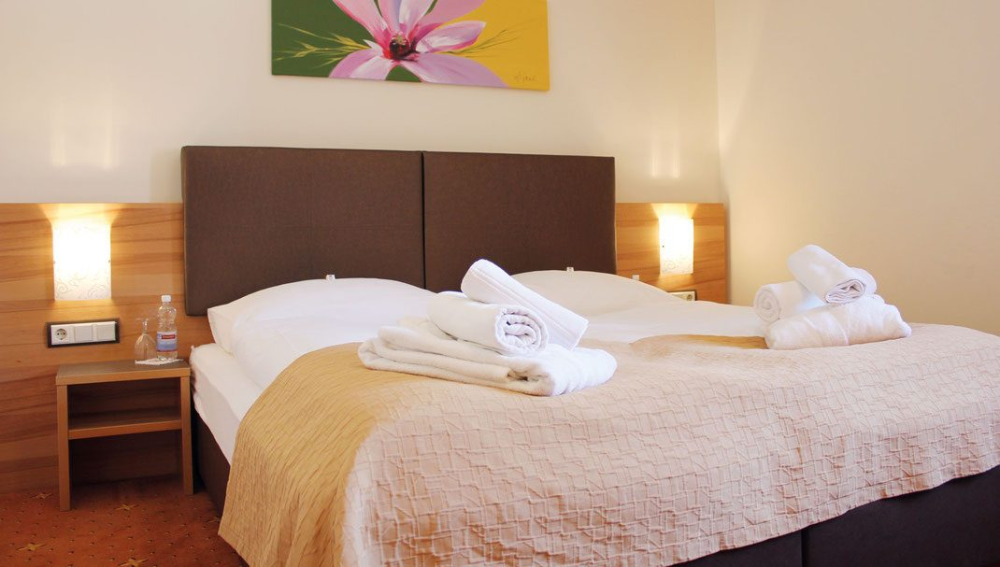
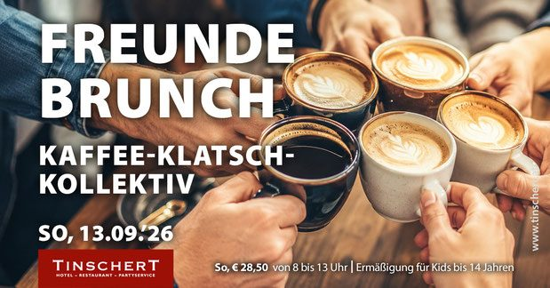
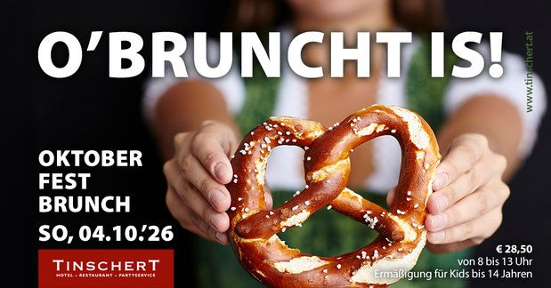
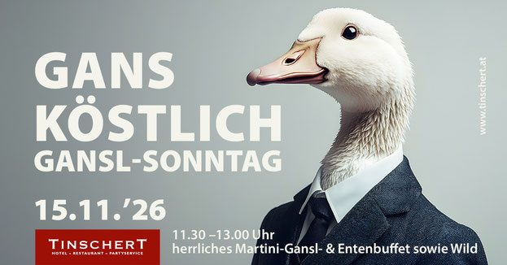
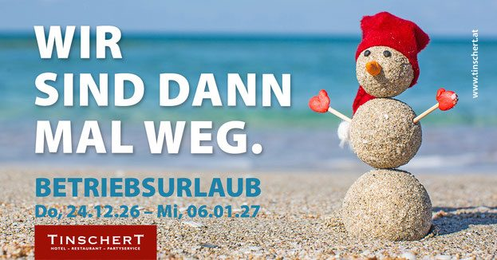

Haupthaus
Ing. Schmiedlstraße 6
18 Hotelzimmer (Zimmer 11–28) mit 29 Betten, Restaurant, Gaststube und die Frühstücksräumlichkeiten für alle Häuser. Seit 2020 vollklimatisiert, mit neuen Lärmschutzfenstern und Rollläden.
Schwertberg · Mühlviertel · seit 1896
Vier Häuser mitten in Schwertberg: 57 klimatisierte Zimmer und Apartments, ein Restaurant mit eigener Küche, ein Wellnessbereich mit Sauna und Whirlpool – und ein Partyservice, der seit Jahrzehnten Feste im ganzen Zentralraum bekocht.

Das Haus
Check-in, Frühstück und Restaurant sind immer im Haupthaus. Geschlafen wird je nach Kategorie in einem von vier Häusern im Ortszentrum.
Ing. Schmiedlstraße 6
18 Hotelzimmer (Zimmer 11–28) mit 29 Betten, Restaurant, Gaststube und die Frühstücksräumlichkeiten für alle Häuser. Seit 2020 vollklimatisiert, mit neuen Lärmschutzfenstern und Rollläden.
Ing. Schmiedlstraße 5, gegenüber
5 klimatisierte Hotelzimmer (31–35) mit 8 Betten, der gesamte Wellnessbereich mit Sauna, Dampfbad, Whirlpool und Fitnessgeräten sowie der Seminarraum.
Marktplatz 8, ca. 90 m entfernt
20 Hotelzimmer (41–68) mit 28 Betten und eine Ferienwohnung (70), dazu Terrasse und Aufenthaltsbereich. Seit 2023 vollklimatisiert.
Hauptstraße 3, ca. 200 m entfernt
13 Business-Apartments (81–93) mit 26 Betten, Terrasse und Aufenthaltsbereich. Seit 2024 in Betrieb und komplett klimatisiert.
Vier Gründe für Schwertberg
Komfortables 4-Sterne-Hotel mit 95 Betten für Kurzurlauber und Business-Reisende – klimatisiert, mit Arbeitsplatz, WLAN und LAN in jedem Zimmer.
Internationale Küche und echte österreichische Hausmannskost, hausgemachte Mehlspeisen und regelmäßige Spezialitätenwochen.
Hochzeit, Geburtstag, Taufe, Firmung oder Firmenfeier – im Haus bis 102 Personen, auswärts mit unserem Partyservice und Catering.
Finnische Sauna, Aroma-Dampfbad, großer Whirlpool, Solarium, Fitnessraum und Ruhebereich im Haus Langwieser – auch als Day-Spa ohne Übernachtung.
Mittagsmenü · Woche 38/26
Ausgabe von 11:30 bis 13:00 Uhr. Das Mittagsmenü gibt es auf Vorbestellung auch zum Abholen.
Wochensuppe 1: Rindsuppe · Wochensuppe 2: Cremesuppe
Informationen zu Zutaten, die Allergien oder Unverträglichkeiten auslösen können, erhalten Sie bei unseren Servicemitarbeiterinnen und Servicemitarbeitern.
Jahresplan 2026
Sonntagsbrunch von 08:00 bis 13:00 Uhr, Wildbuffet im Herbst, Gansl im November – die Termine stehen für 2026 und 2027 bereits fest.



Öffnungszeiten
| Montag–Mittwoch | 07:00–14:00 Uhr und 16:30–23:00 Uhr |
|---|---|
| Donnerstag + Freitag | 07:00–10:00 Uhr |
| Samstag + Sonntag | 07:30–11:00 Uhr (Frühstücksbuffet) |
| Frühstück | Mo–Fr 07:00–10:00 Uhr, Sa + So 07:30–11:00 Uhr |
| Warme Küche | Mo–Mi 11:30–13:00 Uhr und 18:00–21:00 Uhr |
Außerhalb dieser Zeiten öffnen wir auf Anfrage – ab einer Mindest- bzw. Garantieanzahl von ca. 50 Personen.
Änderungen vorbehalten. Alle Feiertagsregelungen finden Sie im Jahresplan.

Seit 1896
Familiäre Atmosphäre, moderner Komfort und persönliches Service – in der gemütlichen Gaststube, im Restaurant, im Garten oder im 4-Sterne-Hotel. Geselliges Beisammensein oder Ruhe und Entspannung: Sie entscheiden. Familie Tinschert & Team
1896 erwarb Johann Langwieser das Gasthaus, 1955 übernahmen Franz und Christine Tinschert das Haus „Zum Schwarzen Rössl“. Seit August 2017 führt Martin Hans Tinschert den Betrieb.
Seit 2023 erzeugen wir Strom selbst: erste PV-Anlage mit rund 35 kW, 2024 um rund 40 kW und 2025 um rund 25 kW erweitert – Gesamtleistung rund 100 kW. Dazu Elektro-Klein-LKW im Catering und Wärmerückgewinnung seit 2011.
Seit 2020 gibt es die Tinschert-App mit Treueprogramm und Gutschein-Shop, seit 2022 den digitalen Pre-Check-In und ein neues Hotelreservierungsprogramm.
In zwei Minuten erledigt
Termin, Personen und Zimmerkategorie angeben – wir bestätigen mit Fixpreis inklusive Frühstück und Wellness.
Für Mittagsmenü, Abendkarte, Brunch oder Frühstück – auch für größere Runden.
Frühstücksbuffet plus Wellness um € 39,50 pro Person, täglich von 08:00 bis 16:30 Uhr.
Wertgutschein für Essen, Übernachtung oder Wellness – zum Ausdrucken oder per Post.
Partyservice & Catering
Seit 1978 gehört der Partyservice zum Haus. Heute fährt ein eigener Fuhrpark zu Hochzeiten, Firmenfeiern und Betriebsverpflegungen – mit Front-Cooking-Systemen, Zelten, Mobiliar und Geschirr aus dem eigenen Lager.